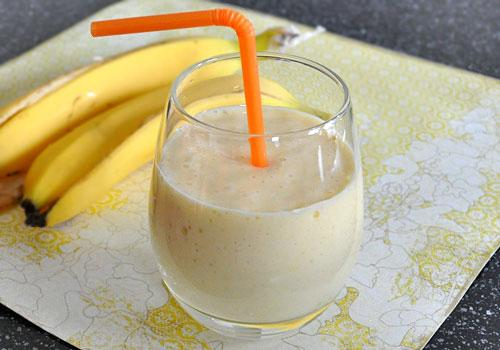

Banana Smoothie

Description
Fresh mango and bananas are blended with milk to create this healthy and delicious smoothie. You will love it at first sip and it will definitely give you some energy in the morning. If you like your smoothies to be more on the sweet side, try adding some honey or a teaspoon of sweetened condensed milk.
Ingredients:
- 1 Mango (large,ripe)
- 2 Bananas (medium,ripe)
- 1 Cup whole milk
- 1 Cup ice (about 8 cubes)
Steps:
- Wash mango, remove the skin and slice the flesh away from the seed. Peel the bananas and slice in 3 sections.
- Place all ingredients in a blender (starting with milk). Blend until smooth.
- Pour into chilled glasses and serve.
Homepage